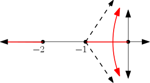

a - pickoff point
b - block
c - arrow
d - summing junction
closed loop gain - \(T(s) = \frac{C(s)}{R(s)}\)
open loop gain - \(\frac{B(s)}{E(s)}\)
feedforward gain - \(\frac{C(s)}{E(s)}\)
node - signal or variable
transmittance - gain between nodes
path - traversal of nodes
loop - closed path
forward path gain - gain of open path
Used to calculate gain between nodes in complex graphs
Mason's gain formula
\[G_{BA} = \frac{\sum P_i \Delta_i}{\Delta}\]
Graph cofactor \[\Delta = 1 - \sum \text{1-loop gains} + \sum \text{2-loop gains} - ...\]
Where \(\text{n-loop gains}\) are the loop gains of all permutations of non-touching 1-loops
\(P_i\) - ith forward path gain
\(\Delta_i\) - graph cofactor with the gains of loops touching the ith forward path removed
Find the gain between \(x1\) and \(r1\) where
\(A_{11} x_1 + A_{12} x_2 + r_1 = x_1\)
\(A_{21} x_1 + A_{22} x_2 + r_2 = x_2\)
1-loops\(\Delta = 1 - L_1 - L_2 - L_3 + L_1L_2 = 1 - A_{11} - A_{12} A_{21} - A_{22} + A_{11}A_{22}\)
\[\frac{x_1}{r_1} = \frac{P_1 \Delta_1}{\Delta} = \frac{(1)(1 - L_2)}{\Delta} = \frac{1 - A_{22}}{1 - A_{11} - A_{12} A_{21} - A_{22} + A_{11}A_{22}}\]
roots of \(G(s)\): closed loop zeros
roots of \(1 + G(s)\): closed loop poles
\(\frac{B}{E} = G(s)H(s)\)
roots of \(G(s)H(s)\): zeros
poles of \(G(s)H(s)\): poles
Characteristic equation - \(1 + G(s)H(s) = 1 + \frac{N_1N_2}{D_1D_2} = \frac{D_1D_2 + N_1N_2}{D_1D_2}\)
\(D_1D_2 + N_1N_2\): closed-loop poles
\(D_1D_2\): open-loop poles
transfer functions needs to be in polynomial form
\(G_2(s) = \frac{1}{s-1}\)
\(s = +1 \Rightarrow e^t\), so system is unstable
second-order transfer function - \[T(s) = \frac{N}{N + D} = \frac{w_n^2}{s^2 + 2\zeta w_ns + w_n^2}\]
\(\zeta = \cos (\theta)\): damping coefficient
\(w_n\): undamped natural frequency
\(w_d = w_n \sqrt{1 - \zeta^2}\) - damped frequency
\(\zeta \omega_n\): attenuation
use quadratic formula to find poles
\[\begin{equation*} s_1,s_2 = \begin{cases} -\zeta w_n +- w_n \sqrt{\zeta^2 -1} & \zeta \geq 0 \\ -\zeta w_n +- w_n \sqrt{1 - \zeta^2} & 0 < \zeta < 1 \end{cases} \end{equation*} \]Four cases:
Let \(Q(s) = a_ns^n + a_{n-1}s^{n-1} + ... + a_1s + a_0 = 0\)
If \(n\) is even
| \(s^n\) | \(a_n\) | \(a_{n-2}\) | … | \(a_0\) |
| \(s^{n-1}\) | \(a_{n-1}\) | \(a_{n-3}\) | … | \(a_1\) |
If \(n\) is odd
| \(s^n\) | \(a_n\) | \(a_{n-2}\) | … | \(a_0\) |
| \(s^{n-1}\) | \(a_{n-1}\) | \(a_{n-3}\) | … | \(a_1\) |
Construct rest of table
| \(s^{n-2}\) | \(b_1\) | \(b_2\) | … | \(b_{n+1}\) |
| \(s^{n-3}\) | \(c_1\) | \(c_2\) | … | \(c_{n+1}\) |
| \(s^{n-4}\) | \(d_1\) | \(d_2\) | … | \(d_{n+1}\) |
Where \[ \begin{aligned} b_1 & = \frac{a_{n_1}a_{n-2} - a_na_{n-3}}{a_{n-1}} \\ b_2 & = \frac{a_{n_1}a_{n-2} - a_na_{n-4}}{a_{n-2}} \\ ... \end{aligned} \]
If \(b_n\) is zero, use \(\varepsilon\) as a placeholder for a positive number. Assume blank entries to be 0.
If a row is zero, differentiate the row above it and replace the zeros with the coefficients.
The number of sign changes in the first column is equal to the number of poles in RHP.
If the rows above and below \(\varepsilon\) have the same sign, then the poles are on the imaginary axis.
If the rows above and below \(\varepsilon\) have the same sign, then the poles are on the real axis.
Let \(Q(s) = s(s+1)(s+2) + 7 = s^3 + 3s^2 + 2s + 7 = 0\)
| \(s^3\) | 1 | 2 |
| \(s^2\) | 3 | 7 |
| \(s\) | \(\frac{-1}{3}\) | nan |
| \(s^0\) | 7 | nan |
Two sign changes means two RHP poles, 1 LHP pole, so the system is unstable.
Let \(Q(s) = s^3 + 4s^2 + s - 6\)
| \(s^3\) | 1 | 1 |
| \(s^2\) | 4 | -6 |
| \(s^1\) | \(\frac{10}{4}\) | |
| \(s^0\) | -6 |
One sign change means one RHP pole, 2 LHP poles, so the system is unstable.
Let \(Q(s) = s^3 - s^2 - s + 1 = 0\)
| \(s^3\) | 1 | -1 |
| \(s^2\) | -1 | 1 |
| \(s^1\) | \(\varepsilon\) | |
| \(s^0\) | 1 |
\(G(s) = \frac{k}{s(s+1)(s+2)}\) \(k_p = \lim_{s \to 0} G(s) = \infty\) \(k_v = \lim_{s \to 0} s G(s) = \frac{k}{2}\) \(e_{ss} = \frac{3}{1 + k_p} + \frac{2}{k_v} = \frac{4}{k}\) \(Q(s) = s(s+1)(s+2) + K = s^3 + 3s^2 + 2s + K\)
| \(s^3\) | \(1\) | \(2\) |
| \(s^2\) | \(3\) | \(K\) |
| \(s^1\) | \(\frac{6-K}{3}\) | |
| \(s^0\) | \(0\) |
\(T(s) = \frac{G}{1+G} = \frac{k}{s^2 +2s + K}\)
\(Q(s) = \frac{s^2 + 2s + K}{s(s+2)}\)
\(Q(s) = s^2 + 2s + K\)
| \(s^2\) | 1 | K |
| \(s^1\) | \(2\) | |
| \(s^0\) | \(2K\) |
System is stable for all \(K > 0\)
\(s_1,s_2 = \frac{-2 +- \sqrt{4 - 4K}}{2} = -1 += \sqrt{1-K}\)
Let \(K=0\), then \(s_1,s_2 = 0, -2\)
Let \(K=.5\), then \(s_1,s_2 = -0.29, -1.707\)
Overdamped
Let \(K=1\), then \(s_1,s_2 = -1, 1\)
Critically damped
Let \(K=2\), then \(s_1,s_2 = -1+j, 1+j\)
Underdamped
Let \(F(s)\) be some complex function and \(s_1\) be some complex point.
Then \[|F(s)| = \frac{|s_1 + z_1|...|s_1 + z_n|}{|s_1 + p_1|...|s_1 + p_n|}\]
and \[\angle F(s) = \sum \angle (zeros \rightarrow s_1) - \sum \angle (poles \rightarrow s_1)\]
With the characteristic equation, we can find all the poles of the closed-loop transfer function and determine stability.
The zeroes of the characteristic equation are the poles of the closed-loop transfer function.
Note that we factor \(K\) out of \(G(s)H(s)\) since the gain is trivial to adjust in most systems.
\[Q(s) = 1 + KG(s)H(s) = 1 + \frac{K (s + Z_1) ... (s + Z_n)}{(s + P_1) ... (s + P_n)}\]
\[KG(s)H(s) = \frac{K (s + Z_1) ... (s + Z_n)}{(s + P_1) ... (s + P_n)} = -1 + j0\]
So \[\frac{K |s + Z_1| ... |s + Z_n|}{|s + P_1| ... |s + P_n|} = 1\]
and \[\sum \angle (zeros \rightarrow s_1) - \sum \angle (poles \rightarrow s_1) = \pi(1 + 2n), n = 0,1,2,...\]
When testing specific points, it is generally easier to start by checking the angle first.
Given \(G(s)H(s) = \frac{s+1}{s+3}\), check if \(s_1 = 2 + j3\) is located on the root locus
\(\theta_1 - \phi_1 = \tan^{-1} (\frac{3}{3}) - \tan^{-1} (\frac{3}{5}) \approx 14^{\circ}\)
Characteristic equation: \(1 + KG(s)H(s) = 0\)
So \(s_1\) is not part of the root locus
Rules
branches intersect the real axis where K is at a local min/max (\(\frac{d G(s) H(s)}{ds} = 0\)) (breakaway/breakin point)
angle of departure from a pole: \(\phi_p = \sum \angle (zeros \rightarrow s_1) - \sum \angle (poles \rightarrow s_1) - \pi\)
Routh-Hurwitz
Let \(G(s)H(s) = \frac{K}{s (s + 1) (s + 2)}\)
\(N_p = 3, N_z = 0\)
From rule 3, the locus is defined on the real axis for \((-\infty, -2) \cup (-1, 0)\)
From rule 5, The centroid is located at \(\sigma_A = \frac{\sum Re(p_i) - \sum Re(z_i)}{N_p - N_z} = \frac{-1 + 2 + 0}{3} = -1\)
From rule 4, the asymptotes of the branches at \(K = \infty\) from the centroid are \(\phi_i = \frac{180^\circ (1 + 2 n)}{N_p - N_i}, (n = 0,1,2) = 60^\circ, 180^\circ, 300^\circ\)
Breakaway point: \(1 + KG(s)H(s) = 0 \rightarrow K = \frac{-1}{G(s)H(s)}\)
\[\frac{d}{ds} \frac{1}{s (s + 1) (s + 2)} = \frac{-(1) (3s^2 + 6s + 2)}{[s (s + 1) (s + 2)]^2} = 0\]
so \(s_1,s_2 = \frac{-6 \pm \sqrt{36 - 24}}{6} \approx -0.42, -1.58\)
but \(-1.58\) is not defined on the real axis, so it is thrown away
Imaginary axis intersection
| \(s^3\) | 1 | 2 |
| \(s^2\) | 3 | \(K\) |
| \(s^1\) | \(\frac{6-K}{3}\) | |
| \(s^0\) | K |
So the poles are on the imaginary exis when \(K=6\) 
Let \(G(s) = \frac{K}{s(s+1)}\)
\(\sigma_A = \frac{\sum Re(p_i) - \sum Re(z_i)}{N_p - N_z} = \frac{-1}{2}\)
Breakaway point
\[\frac{d}{ds} [G(s)] = 0\]
\(s = \frac{-1}{2}\)
Let \(G(s) = \frac{k(s^2 + 2s + 2)}{s(s-2)}\)
Zeros are located at \(s_1,s_2 = \frac{-2 \pm \sqrt{4 - 8}}{2} = -1 \pm j\)
\(N_p,N_z = 2\), so no asymptotes
Breakaway point
\[\frac{dK}{ds} = \frac{d}{ds} G(s) = \frac{(s^2 - 2s)(2s + 2) - (s^2 + 2s+ 2)(2s - 2)}{(s(s - 2))^2} = 0\]
so \(s_1,s_2 = 0.618, -1.68\)
but \(0.618\) is not defined on the real axis, so it is thrown away
Angle of arrival
\(\phi_z = \pi + \sum \angle \text{poles} - \sum \angle \text{zeros} = \pi + (\pi - \tan^{-1}\frac{1}{3}) + (\pi - \tan^{-1}\frac{1}{1}) - \frac{\pi}{2} = 26.57^{\circ}\)
Imaginary Axis Intersection
| \(s^2\) | \(1 + K\) | $2K |
| \(s^1\) | \(2K-2\) | |
| \(s^0\) | \(2K\) |
So no sign change occurs when \(K \geq 1\)
If \(K = 4\), plot RL for \(P > 0\)
\(Q(s) = 1 + G(s) = 1 + \frac{4}{s(s+p)} = s^2 + ps + 4 = 1 + \frac{ps}{s^2 + 4} = 0\)
\(G_1(s) = \frac{ps}{s^2 + 4}\)
Angle of departure
\(\phi_p = \pi + \sum \angle \text{zeros} - \sum \angle \text{poles} = \pi\)
Break in point
\[\frac{dp}{ds} = \frac{d}{ds}(\frac{s}{s^2 + 4}) = \frac{(s^2 +4)(1) - s(2s)}{(s^2 + 4)^2} = 0\]
\(s^2 + 4 - 2s^2 = 0\)
\(s_1,s_2 = \pm 2\)
Compensator
A block added in front of the plant of a feedback system to tweak performance, denoted by \(G_C(s)\).
Three cases:
| poor transient response | use Lead or PD compensator |
| poor steady state error | use Lag or PI compensator |
| poor transient + steady state | use Lag-Lead or PID compensator |
| unstable system | use PID compensator |
Steps to design a lead compensator:
\(G_C(s) = K_C(s + z_0)\)
Think of PD as a special case of Lead compensator with pole at infinity
Where
Steps to design a PD compensator:
\[G_C = \frac{K_C(s + \tau)}{s + \frac{\tau}{\alpha}}\]
Steps to design a lag compensator:
Let \(G(s) = \frac{4}{s(s+2)}\)
\(T(s) = \frac{4}{s^2 + 2s + 4}\)
\(s_1,s_2 = -1 \pm j \sqrt{3}\)
This yields \(k_V^G = \lim_{s \to 0} sG(s) = 2\)
Assume design objective \(K_V = 20\)
\[ \begin{aligned} \lim_{s \to 0}sG_C(s)G(s) & = \frac{4K_C(s + \tau)}{(s + \tau/\alpha)(s + 2)} \\ & = 2K_C\alpha = 20 \end{aligned} \]
Let \(K_C = 1\). Then \(\alpha = 10 \longrightarrow \alpha = 11\)
With the 10% rule, we place the zero at \(-.2\) and the pole at \(-.2/11\).
The angle added by the compensator is: \(\phi = \left(\pi - tan^{-1}\left( \frac{\sqrt{3}}{.8} \right) \right) - \left(\pi - tan^{-1}\left( \frac{\sqrt{3}}{1 - .2/11} \right) \right) = -4.75^{\circ}\)
IPE plot
Finally, using the magnitude condition to find \(K_C\),
\(|G_C(s)G(s)| = \frac{4K_C\sqrt{.8^2 + 3}}{\sqrt{(-1 + .2/11)^2 + 3} + 3} * \frac{1}{\sqrt{1 + 3} \sqrt{1 + 3}} = 1\)
so \(K_C = 1.044\), and finally
\[G_C(s) = \frac{1.044(s + .2)}{s + .2/11}\]
\[G_C(s) = \left[\frac{K_c(s + \frac{1}{\tau})}{s + \frac{1}{\alpha_1 \tau_1}} \right] \left[ \frac{s + \frac{1}{\tau_2}}{s + \frac{1}{\alpha_2 \tau_2}} \right]\]
Similar to Lag compensator, but pole added is on the origin. This means the type number is one more than an equivalent Lag compensator
\[ G_C(s) = (K_P + K_D s + \frac{K_I}{s})\]
Let \(G(s) = \frac{4}{s(s+2)}\)
\(T(s) = \frac{4}{s^2 + 2s + 4}\)
\(s_1,s_2 = -1 \pm j\sqrt(3) = - \zeta \omega_n \pm j \omega_n \sqrt{1 - \zeta^2}\) so \(\zeta = 0.5, w_n = 2\)
Suppose we want \(\zeta = 0.5, w_n = 4\) (same overshoot, but faster settling time)
\(s_1^*,s_2^* = -2 \pm 2j \sqrt{3}\)
So we want \(s_1^*\) to be part of the root locus:
\[ \begin{aligned} \angle G_d(s_1^*) & = \angle G_C(s_1^*) + \angle G(s_1^*) = \pi \\ & = \phi + [ -\theta_1 -\theta_2 ] = \pi \\ & = \phi - \frac{\pi}{6} = \pi \end{aligned} \]
\(\phi = \frac{\pi}{6}\)
Using bisector method
\(\gamma = \frac{\pi - \theta - \phi}{2}\)
\(\beta = \pi - \gamma - \theta = 180^{\circ} - 90^{\circ} + \frac{\theta}{2} + \frac{\phi}{2} - \theta = 90^{\circ} - \frac{\theta}{2} + \frac{\phi}{2} - \theta\)
Using law of sines
\[\frac{OA}{\sin(\beta)} = \frac{OB}{\sin(\gamma)}\]
$OB = $
G = tf([4],[1,2,0])
Open SISO Toolbox
Add design requirements (natural frequency \(\omega_n\) and damping coefficient \(\zeta\))
Use bisector method to obtain alpha and add pole/zero pair
When a sinusoid is the input to an LTI system:
\(x(t) = A\sin(\omega t + \theta) \rightarrow y_{ss}(t) = A|G(j\omega t)|sin(\omega t + \theta + \angle G(j\omega))\))
Bode plot
Plot of steady state response of a system to sinusoidal input
Magnitude \(M(\omega) = 20 \log |G(j \omega) |\) \(|G(jw)| = \sqrt{\text{Re}^2 + \text{Im}^2}\)
Phase \(\phi(\omega) = \angle G(j \omega)\) \(\angle G(j \omega) = \tan^-1(\frac{\text{Im}}{\text{Re}})\)
From the properties of logarithms, if we know the shapes of the plots from some basic functions, we can compose them by adding them together.
Let \(G(s) = K + j0\)
\(|G(jw)| = K\)
\(\angle G(jw) = \tan^{-1} \frac{0}{K} = 0\)
No phase contribution
Upward shift of \(20\log(K) \text{ dB}\)
Let \(G(s) = j\omega\)
\(|G(j\omega)| = \omega\) \(\text{mag. dB} = -20log(\omega)\)
\(\angle G(j\omega) = \tan^{-1} \frac{\omega}{0} = 90^{\circ}\)
Upward slope of 20dB/decade for low frequencies
90 degree increase everywhere
Let \(G(s) = \frac{1}{j\omega}\)
\(|G(j\omega)| = \frac{1}{\omega}\) \(\text{mag. dB} = -20log(\omega)\)
\[\angle G(j\omega) = \frac{1}{\tan^{-1} \left( \frac{\omega}{0} \right)} = -90^{\circ}\]
Downward slope of 20dB/decade for low frequencies
90 degree decrease everywhere
Let \(G(s) = s + \tau\)
\(\tau\) is called breakpoint
\(|G(jw)| = \sqrt{\omega^2 + \tau^2}\) \(\text{mag. dB} = 20\log(\sqrt{\omega^2 + \tau^2})\)
\(\angle G(jw) = \tan^{-1}(\frac{\omega}{\tau})\)
Upward slope of 20dB/decade, starting at the break point
+90 degree tangent curve, starting one decade below the breakpoint and ending 1 decade above
Let \(G(s) = \frac{1}{s + \tau}\)
\(\tau\) is called breakpoint
\[|G(jw)| = \frac{1}{\sqrt{\omega^2 + \tau^2}}\] \(\text{mag. dB} = -20\log(\sqrt{\omega^2 + \tau^2})\)
\(\angle G(jw) = -\tan^{-1}(\frac{\omega}{\tau})\)
Downward slope of 20dB/decade, starting at the break point
-90 degree tangent curve, starting one decade below the breakpoint and ending 1 decade above
It is easy to construct fairly accurate bode plots using the primitive elements above.
The plot should range from 1 decade below the lowest breakpoint to 1 decade above the highest.
Let \(G(s) = \frac{1}{s + \tau} = \frac{1}{\frac{s}{\tau} + 1}\) (normalized)
\(|G(j\omega)| = \frac{1}{\sqrt{1 + \frac{\omega}{\tau}^2}}\)
\(\angle G(j\omega) = - \tan^{-1}(\frac{\omega}{\tau})\)
Points of interest
| \(0.1\tau\) | \(\tau\) | \(10\tau\) | |
| \(-20 \log(G(j\omega))\) | 0 dB | -3 dB | -20 dB |
| \(\angle G(j\omega)\) | 0 degrees | -45 degrees | 84.3 degrees |
Let \(G(s) = \frac{\omega_n^2}{s^2 + 2\zeta \omega_n s + \omega_n^2}\), where $ 0 < ζ < 1$ (for a complex system)
\(G(j \omega) = \frac{1}{1 - v^2 + 2 \zeta j v}\), where \(v = \frac{\omega}{\omega_n}\)
\(|G(j v)| = \frac{1}{\sqrt{1 - v^2 + 4 \zeta^2 v^2}}\)
\(\angle G(j v) = - \tan^{-1}(\frac{2 \zeta v}{1 - v^2})\)
Let \(\zeta = .1\) Points of interest
| \(v = \frac{\omega}{\omega_n}\) | 0.1 | 1 | 10 |
| \(-20 \log(G(j v))\) | 0 dB | +14 dB | -40 dB |
| \(\angle G(j\omega)\) | 0 degrees | -90 degrees | -180 degrees |
Let \(F: \mathbb{C} \to \mathbb{C}\) (a transfer function)
Let \(\Gamma_s\) be a contour which encircles \(Z\) number of zeros and \(P\) number of poles of \(F\).
Then the contour \(F(\Gamma_s) = \Gamma_F\) encircles the origin \(N = Z - P\) times in the clockwise direction.
Let \(F(s) = Q(s) = 1 + G(s) = 1 + \frac{N(s)}{D(s)} = \frac{N(s) + D(s)}{D(s)} = \frac{\text{closed-loop poles}}{\text{open-loop poles}}\)
So if we let \(\Gamma_s\) encircle the RHP plane, we can use the resulting plot to evaluate the stability of the system.
If the system is stable, there are no closed-loop poles in the RHP, so \(Z = 0 = N + P\) and \(-N = P\).
This means that the number of times \(\Gamma_F\) encircles the origin counter clockwise , \(-N\), must be equal the number of open-loop poles, \(P\), for the system to be stable..
However, we can make a simplification and use \(G(\Gamma_s) = \Gamma_G\) instead of \(\Gamma_F\), since it is simpler than \(F\).
Since \(F(s) = Q(s) = 1 + G(s)\), this means that whenever \(\Gamma_s\) encircles closed-loop poles or open-loop poles, \(\Gamma_G\) will encircle \(-1\) instead of the origin.
\(\Gamma_G\) is called the Nyquist Plot for the closed-loop system
To get the nyquist plot, we need to construct a contour around the right-half plane, then plug these points into \(G(s)\).
We work in polar coordinates during construction because it matches the geometry of the infinitely large semicircle enclosing the RHP.
\(re^{j\phi} = \frac{r}{2}(\cos(\phi) + j\sin(\phi))\)
A useful property of LTI systems is that \(G(s) = |G(s)|\angle G(s)\), so we will break down \(G(s)\) into magnitude and angle before plugging in points.
Let \(G(s) = \frac{K}{s + 1}\). Find the nyquist plot for the negative unity feedback system.
Plotting imaginary axis: \(\phi = \pm 90^{\circ}\), so \(s = jw\)
\[G(s) = \frac{K}{\sqrt{\omega^2 +1}}\angle -\tan \left( \frac{\omega}{1} \right)\]
| \(\omega\) | \(G(j\omega)\) |
|---|---|
| / | < |
| \(0+\) | \(K \angle - \varepsilon\) |
| \(\infty\) | \(0 \angle - 90^{\circ}\) |
Plotting semicircle:
\[\lim_{r \to \infty} G(re^{j\phi}) = \lim_{r \to \infty}\frac{K}{re^{j\phi} + 1} \approx \lim_{r \to \infty}\frac{K}{re^{j\phi}} = 0*e^{-j\phi} = 0*(\cos(-\phi) + j\sin(-\phi)) = |0|\angle \tan^{-1}\left( \frac{\sin(-\phi)}{\cos(-\phi)} \right) = |0|\angle \phi\]
| $ϕ | \(\lim_{r \to \infty}G(re^{j\phi})\) |
|---|---|
| / | < |
| \(90^{\circ}\) | \(\vert 0 \vert \angle -90^{\circ}\) |
| \(0^{\circ}\) | \(\vert 0 \vert \angle 0^{\circ}\) |
| \(-90^{\circ}\) | \(\vert 0 \vert \angle 90^{\circ}\) |
Does not encircle -1, so N = 0.
-N = P, so system is stable.
Let \(G(s) = \frac{K}{s(s+1)}\)
\[G(s) = \frac{K}{j\omega(\omega+1)} = |\frac{K}{\omega^2 \sqrt{\omega^2 + 1}}| \angle - (90^{\circ} + \tan^{-1}\left( \frac{\omega}{1} \right))\]
Plotting imaginary axis: \(\phi = \pm 90^{\circ}\), so \(s = jw\)
| \(\omega\) | \(G(j\omega)\) |
|---|---|
| / | < |
| \(0+\) | \(\vert \infty \vert \angle - (90^{\circ} + \varepsilon)\) |
| \(\infty\) | \(0 \angle 180^{\circ} - \varepsilon\) |
Plotting large semicircle
\[\lim_{r \to \infty} G(re^{j\phi}) = \lim_{r \to \infty}\frac{K}{r^2e^{2j\phi} + re^{j\phi}} \approx \lim_{r \to \infty}\frac{K}{r^2e^{2j\phi}} = |0|\angle e^{-2j\phi}\]
| $ϕ | \(\lim_{r \to \infty}G(re^{j\phi})\) |
|---|---|
| / | < |
| \(90^{\circ}\) | \(\vert 0 \vert \angle -180^{\circ}\) |
| \(0^{\circ}\) | \(\vert 0 \vert \angle 0^{\circ}\) |
| \(-90^{\circ}\) | \(\vert 0 \vert \angle 180^{\circ}\) |
Plotting small semicircle
\[\lim_{r \to 0} G(re^{j\phi}) = \lim_{r \to 0}\frac{K}{r^2e^{2j\phi} + re^{j\phi}} \approx \lim_{r \to 0}\frac{K}{re^{j\phi}} = |\infty|\angle e^{-j\phi}\]
| $ϕ | \(\lim_{r \to \infty}G(re^{j\phi})\) |
|---|---|
| / | < |
| \(90^{\circ}\) | \(\vert \infty \vert \angle -90^{\circ}\) |
| \(0^{\circ}\) | \(\vert \infty \vert \angle 0^{\circ}\) |
| \(-90^{\circ}\) | \(\vert \infty \vert \angle 90^{\circ}\) |
Does not encircle -1, so \(N = 0\).
\(-N = P\), so system is stable.
Let \(G(s) = \frac{K}{s^2(s+1)}\)
For the real axis \(G(s) = \frac{K}{s^2(s + 1)\)
For the semicircles \(G(s) \approx \frac{K}{s^3\)
| s | G(s) |
|---|---|
| / | < |
| \(\varepsilon j\) | \(\vert \infty \vert \angle - 180^{\circ} - \varepsilon\) |
| \(\infty j\) | \(\vert 0 \vert \angle - 270^{\circ}\) |
| \(\infty e^{\frac{\pi}{2} j}\) | \(\vert 0 \vert \angle - 270^{\circ}\) |
| \(\infty e^{0 j}\) | \(\vert 0 \vert \angle 0^{\circ}\) |
| \(\infty e^{\frac{-\pi}{2} j}\) | \(\vert 0 \vert \angle 270^{\circ}\) |
| \(-\infty j\) | \(\vert 0 \vert \angle 270^{\circ}\) |
| \(- \varepsilon j\) | \(\vert \infty \vert \angle 180^{\circ} - \varepsilon\) |
| \(\varepsilon e^{- 90^{\circ} j}\) | \(\vert \infty \vert \angle 270^{\circ}\) |
| \(\varepsilon e^{0^{\circ} j}\) | \(\vert \infty \vert \angle 0^{\circ}\) |
| \(\varepsilon e^{90^{\circ} j}\) | \(\vert \infty \vert \angle - 270^{\circ}\) |
Encircles -1 twice, so \(N = 2\).
\(-N \neq P\), so system is unstable.
The gain margin \(G_m\) and phase margin \(\phi_{PM}\) are useful for determining when instability occurs as gain or phase are changed.
Note that the magnitude and phase of the nyquist plot as a function of frequency are identical to the bode plot.
Let \(\omega_pi\) be the frequency when the bode plot crosses the real axis. When \(|G(\omega_{\pi})| > 1\) the nyquist plot encloses -1 and the system becomes unstable, so for the system to remain stable \(|G(\omega_{\pi})| < 1\) and \(G_M > 1\)
We define gain margin as a method for quantifying this property.
\(G_m = \frac{1}{|G(j\omega_{\pi})|}\)
where \(\omega_{\pi}\) is the phase crossover frequency, (the frequency where the nyquist plot intersects the real axis)
Physically, the gain margin is the gain that can be added to the system before it becomes unstable. To solve for \(\omega_{\pi}\), use the fact that the imaginary part of \(|G(\j omega_\pi)|\) is zero.
Let \(\omega_c\) be the frequency where the nyquist plot crosses the unit circle. If the angle at this point (shown above as \(\alpha\) is less than 0, the nyquist plot encloses -1, and the system becomes unstable.
The phase margin quantifies this property.
\(\phi_{PM} = 180^{\circ} + \angle G(j\omega_c)\)
where \(\omega_c\) is the gain crossover frequency, (the frequency where the nyquist plot intersects the unit circle).
Let \(G(s) = \frac{K}{s(s+1)(s+2)}\)
\(G(jw) = \frac{K}{j\omega(j\omega+1)(j\omega+2)} * \frac{j\omega(j\omega-1)(j\omega-2)}{j\omega(j\omega-1)(j\omega-2)}= \frac{Kj\omega(j\omega - 1)(j\omega-2)}{\text{don't care}}\)
To find phase crossover and gain margin:
\(\text{Im}(G(j\omega_\pi)) = \text{Im}\left(\frac{Kj\omega_\pi(j\omega_\pi - 1)(j\omega_\pi-2)}{\text{don't care}}\right) = \frac{k\omega_\pi(2 - \omega_\pi^2)}{\text{don't care}} = 0 \longrightarrow \omega_\pi^2 = 2 \longrightarrow \omega_\pi = \sqrt{2}\)
\(|G(j\omega_\pi)| = \frac{K}{\omega_\pi^2(\omega_\pi^2 + 1)(\omega_\pi^2 + 2)} = \frac{K}{6}\)
\(|G(j\omega_\pi)| < 1 \longrightarrow K < 6\)
To find phase margin:
\(|G(j\omega_c)| = 1 \longrightarrow \frac{K}{\omega_c \sqrt{\omega_c^2 + 1} \sqrt{\omega_c^2 + 4}} = 1 \longrightarrow \omega_c^6 + 5\omega_c^4 + 4\omega_c^2 - K^2 = 0\)
In a lead compensator, we try to adjust the phase margin of \(G(s)\) by adding the phase from the compensator to the phase of \(G(s)\).
We set the compensator phase peak frequency to the crossover frequency of \(G_c(s)G(s)\)
Let \(G_c = \frac{K_c ( s + \frac{1}{\tau})}{s + \frac{1}{\alpha \tau}} = \left|\frac{K_c \sqrt{\omega^2 + (\frac{1}{\tau})^2}}{\sqrt{\omega^2 + (\frac{1}{\alpha \tau})^2}} \right| \angle \tan^{-1}(\omega \tau) - \tan^{-1}(\omega \alpha \tau)\)
We can use the angle to be added by the compensator (\(\phi_m\), angle of deficiency) to find \(\alpha\) the ratio of the zero to pole location.
\(\sin(\phi_m) = \frac{1 - \alpha}{1 + \alpha} \longrightarrow \alpha = \frac{1 - \sin(\phi_m + \varepsilon)}{1 + \sin(\phi_m + \varepsilon)}\)
We add \(\varepsilon\) to account for a slight phase shift that we will see later.
with frequency \(\omega_m = \frac{1}{\sqrt{\alpha} \tau}\) with the pole and zero separated like this, there is also going to be an addition to the magnitude.
The phase peak is located halfway between the pole and zero on a logarithmic plot, so the magnitude contribution is \(\frac{20\log(\alpha)}{2} = 10\log(\alpha)\)
Next, we find the frequency on \(|G(j\omega)|\) where the magnitude is equal to \(10\log(\alpha)\). When the compensator is added, this will be where \(|G(j\omega)G_c(j\omega)|\) intersects \(0 \text{ dB}\). We call this frequency \(\omega_c^*\).
Now that we know where to place the peak of the phase of the compensator, we can calculate the frequencies of the zero and pole.
Finally, since \(\omega_c^* > \omega_c\), the phase margin at \(G(j\omega_c^*\) is slightly less than \(G(j\omega_c\). We check that this drop in phase is less than \(\varepsilon\)
Let \(G(s) = \frac{K}{s(s+2)}\). Assume design requirements are
\(K_v = 20 \text{ s}^{-1}\), \(\phi_{PMd} \geq 50^{\circ}\), \(G_md \geq 10 \text{ dB}\)
First find the gain of \(G(s)\) to satisfy the position error constant, \(K_v\)
\(K_v = \lim_{s \to 0}sG(s) = \frac{K}{2} = 20 \longrightarrow K = 40\)
pkg load control
s = tf([40],[1 2 0]);
[mag ph w] = bode(s);
[mag2db(mag) ph w']
Using the bode plot, we can find \(\omega_c = 6.17 \text{ rad/s}\) and \(\omega_\pi = \infty\)
\(\phi_{PM} = 180^{\circ} + \angle G(j \omega_c) \approx 17.964^{\circ}\)
\[G_m = \frac{1}{|G(j\omega_\pi)|} = \infty \text{ dB}\]
\(\phi_{PMd} = 50^{\circ} = \phi_{PM} + \phi_m\)
So the phase angle that needs to be added is:
\(\phi_m = 50 - \phi_{PM} = 32.036^{\circ}\)
If we let \(\varepsilon = 5^{\circ}\), then \(\phi_m = 32.036^{\circ} + 5^{\circ} = 37.036^{\circ}\).
So \(\alpha = \frac{1 - \sin(37.036^{\circ})}{1 + \sin(37.036^{\circ})} = 0.248\)
\(10\log(\alpha) = -6.04 \text{ dB}\)
Checking the bode plot again, we find that \(|G(j\omega)| = 10\log(\alpha)\) at \(8.87 \text{ rad/s}\).
The phase angle at this point is \(-167.3^{\circ}\), which is a decrease of \(5.336^{\circ}\).
Since \(5.336 > \varepsilon\), we must use \(\varepsilon = 6^{\circ}\) and repeat the process:
\(\alpha = 0.2375\)
\(10\log(\alpha) = -6.2433 \text{ dB}\)
This yields a decrease in \(5.353^{\circ} > \varepsilon\) at \(8.993 \text{ rad/s}\)
so \(\omega_c^* = 8.993\)
zero: \(\frac{1}{\tau} = \sqrt{\alpha}\omega_c^* = 4.383\) pole: \(\frac{1}{\alpha\tau} = 18.453\)
\(G_c(s) = \frac{\frac{1}{0.2375}(s + 4.383)}{s + 18.453}\)
{kind=link}
{kind=link}
{kind=link}
{kind=link}
{kind=link}
{kind=link}
{kind=link}
{kind=link}
{kind=link}
{kind=link}
{kind=link}
{kind=link}
{kind=link}
{kind=link}
{kind=link}
{kind=link}
{kind=link}
{kind=link}
{kind=link}
{kind=link}
{kind=link}
{kind=link}